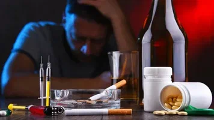
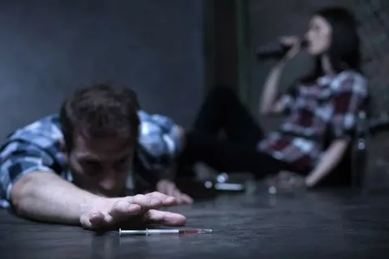

Алкогольная и наркотическая зависимости среди населения
Что это такое?
Алкогольная зависимость — это хроническое заболевание, характеризующееся физической и психологической потребностью в употреблении алкоголя. Это состояние развивается постепенно и может привести к серьёзным нарушениям здоровья, социальной жизни и эмоционального состояния человека.
Основные характеристики алкогольной зависимости:
- потеря контроля над количеством выпитого;
- наличие абстинентного синдрома при отказе от алкоголя;
- увеличение дозы для достижения эффекта;
- снижение интереса к ранее важным занятиям;
- частые попытки бросить, но безуспешно;
- продолжение употребления, несмотря на проблемы со здоровьем, отношениями или работой.
Наркотическая зависимость — хроническое заболевание, которое выражается в неконтролируемом приёме психоактивных веществ. Оно приводит к деструктивному поведению, патологическим изменениям в организме, деградации личности, преждевременной смерти.
Основные характеристики наркотической зависимости:
- сильное желание или потребность принимать наркотики;
- невозможность самостоятельно прекратить употребление;
- увеличение дозы для достижения эффекта;
- угасание интереса к работе, учёбе, хобби;
- продолжение употребления, несмотря на проблемы со здоровьем и вред социальным связям.
Причины возникновения?

Важно понимать, что зависимость редко возникает внезапно — это постепенный процесс, который развивается под действием комплекса факторов.
Алкогольная и наркотическая зависимость возникает под влиянием множества взаимосвязанных факторов, которые могут быть как биологическими, так и социальными или психологическими. Одной из ключевых причин является генетическая предрасположенность, поскольку у некоторых людей организм по-особому реагирует на действие психоактивных веществ, что может усиливать тягу к их употреблению.
Огромное значение играет также состояние нервной системы. При систематическом употреблении алкоголя или наркотических веществ происходят глубокие изменения в химических процессах мозга, особенно тех, которые связаны с ощущением удовольствия, мотивации и системы вознаграждения. Со временем такие изменения могут привести к развитию не только психологической, но и физической зависимости, когда организм начинает воспринимать вещество как необходимое для нормального функционирования.
Биологические факторы
Как бы мы ни относились к алкоголю или наркотикам, одно остаётся неоспоримым: организм каждого человека реагирует на них по-своему. У некоторых людей с рождения присутствует особая склонность к острым ощущениям, тяга к риску и импульсивному поведению. И если вовремя не обратить на это внимания, это может стать первым шагом на пути к зависимости.
Но дело не только в характере. Постоянное употребление психоактивных веществ меняет работу мозга. Особенно страдает система дофамина — гормона удовольствия и мотивации. То, что раньше приносило радость — общение, хобби, спорт — отходит на второй план. Вместо этого человек начинает чувствовать себя "нормальным" только после очередной дозы. Это уже не просто слабость воли — это физическая зависимость.
Не менее важную роль играет и биология. У разных людей метаболизм работает по-разному: у кого-то зависимость развивается стремительно, буквально после нескольких употреблений. И здесь уже не поможет "просто перестать" — требуется помощь специалистов, поддержка и понимание.
Психологические причины
Алкоголь и наркотики зачастую становятся не просто развлечением или способом скоротать вечер — для многих они превращаются в спасательный круг, к которому тянешься в поисках облегчения. Стресс, тревожность, депрессия, чувство одиночества или уверенность в собственной неполноценности — всё это может стать фоном, на котором человек решает: «Хотя бы на время забыть о своих проблемах». И тогда на помощь приходит бутылка или доза.
Сначала кажется, что это работает. Человек расслабляется, становится свободнее, перестаёт думать о своих переживаниях. Но со временем организм начинает воспринимать вещество как необходимый инструмент для выживания в эмоциональном хаосе. Так формируется психологическая зависимость — не менее опасная, чем физическая.
Важную роль здесь играет уровень личностной зрелости. Люди, которые не научились управлять своими эмоциями, не умеют справляться с внутренним напряжением или склонны к импульсивным решениям, гораздо чаще прибегают к таким способам "выживания". Для них наркотик или алкоголь становятся не просто средством от стресса, а заменителем тех навыков, которых им так не хватает: умения говорить о чувствах, находить опору в людях, принимать ответственность за свою жизнь.
Проблема в том, что такие механизмы защиты не помогают справиться с болью — они лишь загоняют её глубже. А зависимость, как паутина, затягивает человека всё сильнее. Поэтому важно помнить: выход есть всегда. И он лежит не через вещество, а через понимание себя, поддержку и готовность начать меняться.
Социальные влияния
Огромное влияние на решение человека употреблять алкоголь или наркотики оказывает его окружение. Если в семье, среди друзей или даже в культуре вокруг принято «снять стресс» бокалом вина или более серьёзными веществами — это постепенно становится нормой. Особенно остро эта закономерность проявляется в подростковом возрасте, когда стремление быть "своим" в компании может перевесить здравый смысл.
Социальное давление работает незаметно, но эффективно: ты не обязан пить или пробовать — но почему-то именно так легче вписаться в коллектив, казаться уверенным или взрослым. И если вокруг все так делают, то и сопротивляться этому течению становится всё сложнее.
Ещё один важный аспект — доступность. Чем легче человеку получить вещество, тем выше шанс, что он решится попробовать. А уж однажды начав, не каждый способен остановиться вовремя. Особенно опасна ситуация в молодёжной среде, где популярность определённых наркотиков порой становится вопросом статуса. То, что кажется безобидным экспериментом, может обернуться зависимостью быстрее, чем это успевают заметить окружающие.
Так формируется порочный круг: общество одобряет, доступ есть, желание доказать что-то себе или другим растёт — и вот уже речь идёт не просто о пробе, а о зависимости, которую сложно побороть в одиночку.

Влияние среды и жизненных обстоятельств
Зависимость редко возникает на ровном месте. Часто её корни уходят в глубокую психологическую боль — ту, что остаётся после травматических переживаний. Жестокое обращение в детстве, потеря близкого человека, пережитое насилие или постоянное эмоциональное напряжение могут стать невидимыми ранами, которые человек пытается заглушить. Именно в такие моменты алкоголь или наркотики предстают как средство временного спасения — способ забыться, отвлечься, хотя бы ненадолго вырваться из реальности.
Но это лишь временное облегчение. А последствия могут быть необратимыми.
Особенно высокий риск зависимости наблюдается у тех, кто живёт в условиях социальной нестабильности: в постоянной борьбе с бедностью, без перспектив, без поддержки родных или общества. Когда нет уверенности в завтрашнем дне, когда каждый день — это борьба за выживание, а не за мечты, очень легко потерять точку опоры. И тогда любое вещество становится своего рода заменителем утраченного смысла.
Чувство безысходности, одиночество, отсутствие будущего — всё это создаёт идеальные условия для зависимости. Ведь когда кажется, что ничего не зависит от тебя, так хочется хотя бы на время почувствовать контроль — пусть даже иллюзорный.
В чем опасность?
Она приходит незаметно. Не с криков, не с предупреждений — просто в какой-то момент ты уже не представляешь себе вечер без бокала вина или общения без сигареты. А потом — без чего-то ещё более сильного. Так начинается зависимость, которую многие поначалу не принимают всерьёз. Но это не просто «слабость характера» или «плохой выбор». Это болезнь. И болезнь эта разрушает всё — тело, разум, семью, будущее.
Зависимость не выбирает возраст, социальный статус или уровень образования. Она может начаться в компании друзей, в попытке забыть о проблемах, в поисках признания или просто из любопытства. Но рано или поздно она становится больше, чем просто привычка. Это образ жизни, в котором единственной целью становится — получить свою дозу. Алкоголь и наркотики поражают мозг. Они меняют химические процессы, отвечающие за удовольствие, эмоции, стресс. Человек перестаёт радоваться тому, что раньше дарило счастье. Он теряет интерес к жизни вне веществ. Мышление сужается, чувство реальности искажается. Появляются тревожность, апатия, депрессия, бессонные ночи и панические атаки. Но это только начало. Со временем страдает тело. Сердце, печень, почки — весь организм работает на износ. Цирроз, инсульты, язвы, рак…

Ниже вы можете перейти по ссылкам и прочитать о историях двух реальный людей что пережили алкогольную и наркотическую зависимость:
- ТУТ вы можете почитать о истории жизни девушки.
- ТУТ вы можете узнать историю мужчины.
Зависимость буквально убивает медленно, но верно.
Рушатся отношения. Друзья отходят, семья разрывается, дети теряют родителей задолго до их физической смерти. Зависимый живёт в постоянном конфликте, лжи, страхе быть разоблачённым. Он становится чужим даже самому себе. Юридические проблемы, финансовые долги, потеря работы, жилья, достоинства — всё это тоже часть зависимости. И часто мы видим лишь последствия, не понимая, что перед нами человек, который давно потерял контроль над своей жизнью. Ещё страшнее осознание, что зависимость передаётся по наследству. Дети, выросшие в семьях с алкоголем или наркотиками, гораздо чаще повторяют судьбу своих родителей. Таким образом боль продолжает свой путь из поколения в поколение.
И самое страшное — зависимость заканчивается смертью. Не всегда явной, как удар или сердечный приступ. Иногда это медленное угасание, внутренняя пустота, потеря смысла жить. Передозировка, суицид, авария — список причин может быть бесконечным.
Но есть и другая сторона этой истории — выздоровление. Оно возможно, только не в одиночку. Только когда общество перестанет осуждать и начнёт помогать. Когда вместо слов «сам виноват» люди услышат: «Тебе нужна помощь. Ты не один».
ПОКА ЧЕЛОВЕК ЖИВ - ЕСТЬ ШАНС.
И наша задача — сделать так, чтобы он успел его использовать.
Как с этим бороться?
Алкогольная и наркотическая зависимость — это не просто «вредная привычка», это хроническое заболевание, которое разрушает тело, разум и душу. Но даже в самых тяжёлых случаях есть выход. С помощью правильного подхода, поддержки и ресурсов можно не только остановить развитие зависимости, но полностью восстановиться и начать новую жизнь.
Алкогольная и наркотическая зависимость — это не просто «слабая воля» или «плохие привычки». Это серьёзное заболевание, которое поражает тело, разум и душу. Но самое главное — это излечимо . Миллионы людей по всему миру прошли путь от зависимости к здоровой, полноценной жизни. И ты можешь быть одним из них.
Первый шаг: признать проблему
Большинство зависимостей начинаются незаметно: «всего один бокал», «просто расслабиться», «чтобы заглушить боль». Но со временем эти случайные действия превращаются в необходимость — без веществ человек чувствует тревогу, раздражительность, даже физическое недомогание.
Признание проблемы — первый и самый трудный шаг.
Обращение за помощью: ты не один
Самостоятельно справиться с зависимостью крайне
сложно. Это не вопрос силы характера, а медицинская и психологическая проблема. Именно поэтому обращение за помощью к специалистам — не слабость, а разумный выбор.
Ведь многие считают, что справиться с зависимостью можно самостоятельно. Это редкое исключение. В большинстве случаев помощь специалистов — жизненно важна.
Кто может помочь?
- Нарколог — диагностирует степень зависимости и назначает лечение;
- Психотерапевт — работает с психологическими травмами, стрессом, эмоциональными триггерами;
- Реабилитационные центры — предлагают комплексное лечение в безопасной среде;
- Группы поддержки — дают эмоциональную опору и пример успешного выздоровления.
Лечение: комплексный подход работает
Любая эффективная программа лечения строится на трёх столпах:
- медикаментозная поддержка — лекарства помогают снять абстинентный синдром, нормализовать работу нервной системы и уменьшить тягу к веществам.
- психотерапия — работа с травмами, установками, страхами и эмоциональной болью, которые часто лежат в основе зависимости.
- реабилитация и поддерживающие программы — восстановление в безопасной среде, участие в группах взаимопомощи, формирование новых жизненных навыков.
Позвонить за помощью — иногда труднее, чем кажется. Но именно этот звонок может стать началом нового этапа вашей жизни.
Поддержка окружения: семья, друзья, сообщество
Иногда слово поддержки или взгляд без осуждения способны удержать человека на пути к здоровью.
Семья и близкие играют ключевую роль в процессе выздоровления. Они могут:
- пройти обучение, чтобы лучше понимать зависимость;
- поддерживать морально;
- создать безопасную и поддерживающую атмосферу дома.
Также огромное значение имеют группы взаимопомощи:
- aнонимные алкоголики;
- анонимные наркоманы;
- братство трезвости.
Профилактика рецидива: подготовься к испытаниям
Рецидив зависимости — это возврат к употреблению психоактивных веществ после периода воздержания или успешной реабилитации. Рецидив — это часть процесса для многих людей. Не стоит расценивать его как провал. Это сигнал: нужно пересмотреть методы, найти новые точки опоры, вернуться к практике самопомощи.
Что помогает избежать срыва:
- определение личных триггеров;
- план действий при стрессе;
- регулярное посещение психолога или группы поддержки;
- практики осознанности и саморефлексии.
Вывод
Зависимость — это не приговор, а сигнал. Это болезнь, которую можно и нужно лечить. И самое важное — ты не одинок в этом. Миллионы людей по всему миру прошли через то же, что и ты, и сумели вернуть себе жизнь, здоровье, надежду. Выздоровление возможно, когда есть желание измениться и поддержка рядом. Помощь — не признак слабости, а проявление силы и мужества. Не бойся сделать первый шаг: позвонить, обратиться, попросить. Именно с этого начинается новая глава — твоя история выздоровления. Ты достоин жить полной, яркой, осознанной жизнью. Жизнью без зависимости, страха и одиночества. Ты важен. Твоя жизнь имеет ценность. И она заслуживает быть здоровой. Не жди, пока станет хуже. Возьми телефон. Сделай звонок. Начни сейчас.
ПОЛЕЗНЫЕ РЕСУРСЫ: